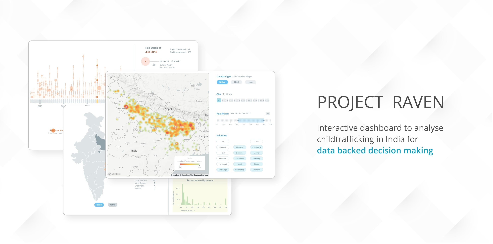
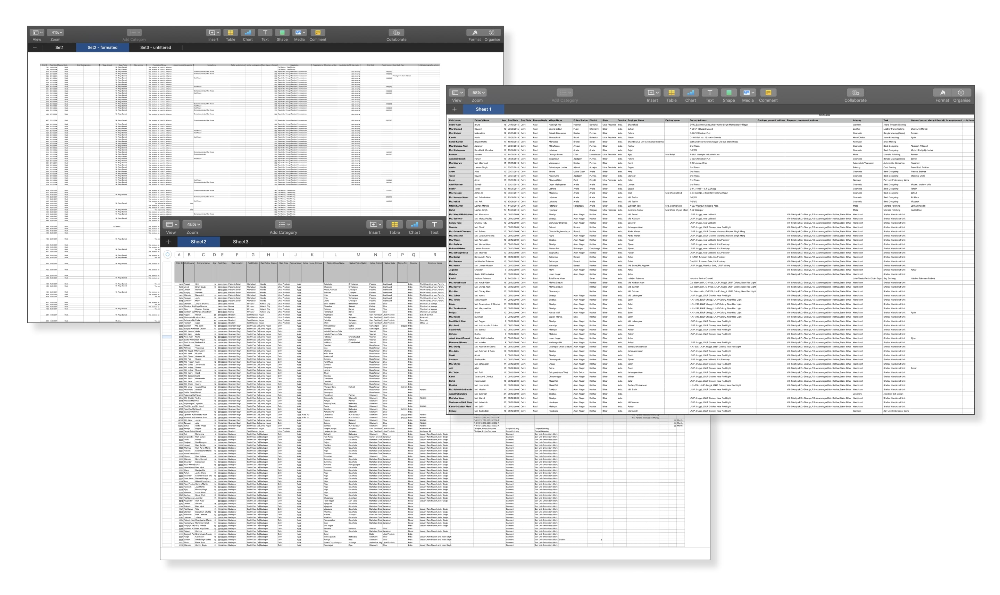
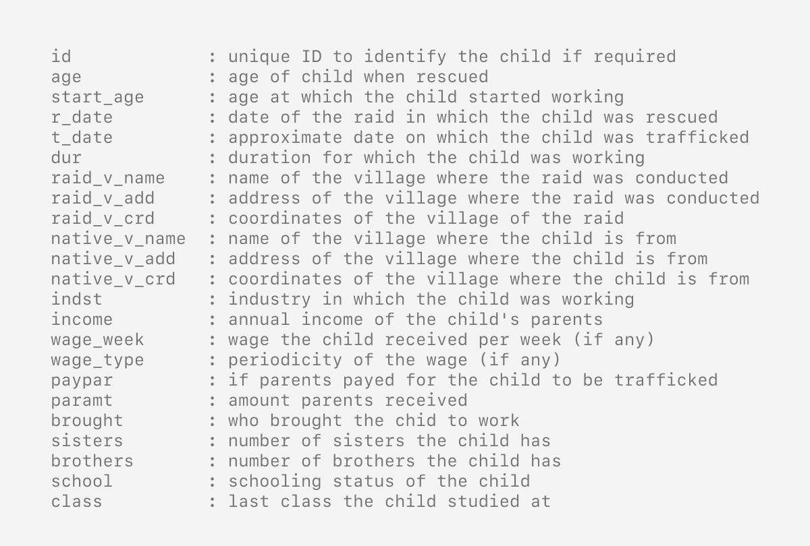
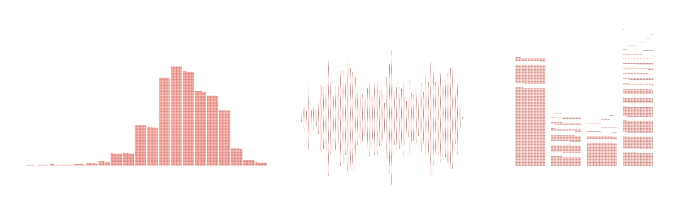
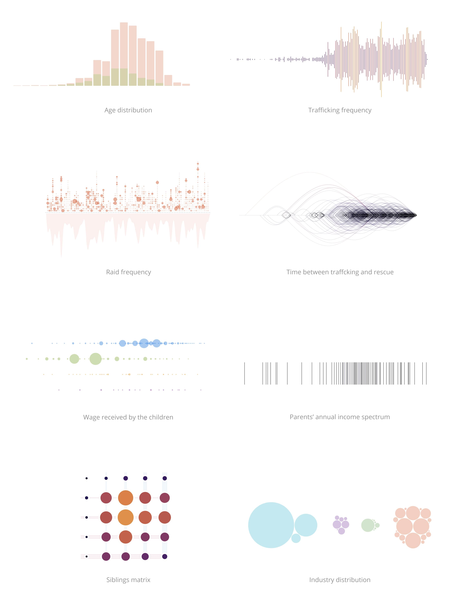
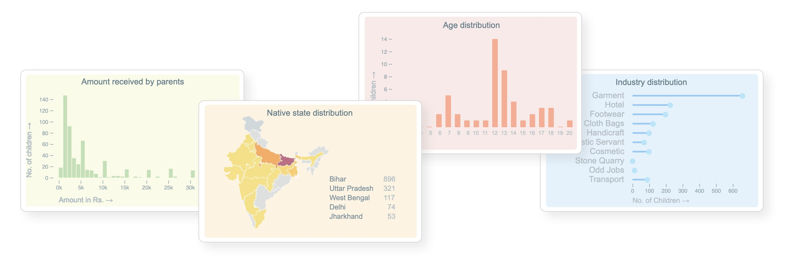
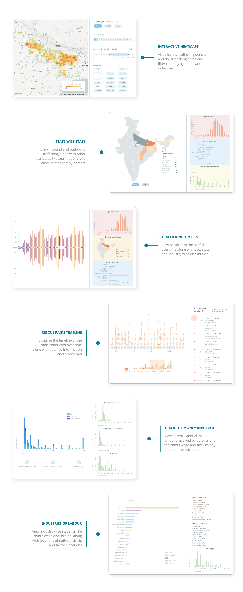
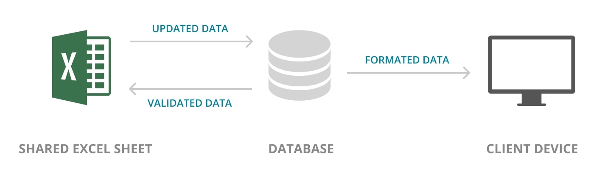

Project Raven
Visualisation of Child Trafficking in India

The project is under an NDA, hence certain sections / scales / labels are removed from this documentation.
Building an Interactive Dashboard to be used by Kailash Satyarthi Children’s Foundation.
Child trafficking in India is still a prevalent problem. How can Data help solve it ?
In India, it is estimated that there are around 135,000 children trafficked each year.
Kailash Satyarthi Children’s foundation (
https://satyarthi.org.in ) has been at the forefront of Child rights movement in
India. They have successfully conducted a lot of raids, across India with the help of Police department and have rescued thousands of kids over the past decade. During such raids, they were able to aggregate a lot of data regarding the kids,
their background, working conditions and more. This resulted in a database of over 20,000 children and 30+ data points each.
The idea then was to create a Data Story that would capture the gravity of the child trafficking situation in India.
Prepping the Data
The data was a crude dump of information collected over a period of 15 years from children rescued in various raids. Since the data collected was updated by a lot of people, it was scattered over multiple spreadsheets with
inconsistent entries and mismatching column labels.

Raw data in the form of Spreadsheets
The data was then fed into a python script that formatted, filled in missing values, combined or split some columns to make it easier to deal with individual data points easily and was stored as a JSON file.
All the places mentioned used the anglicised versions of the village names which were originally in Hindi. Due to this, and general human error, a lot of places were misspelt or missing certain key parts of the name. I used
HERE API to get the coordinates from the village names. But due to the errors in the data as mentioned earlier, there were a lot of discrepancies between the village
names and coordinates. Hence I created a visual method to evaluate the approximate error between actual location and coordinates from HERE API. The idea was to connect the lines between the local village and the local police station. Ideally,
since they would be close by, the lines should be all very short. But, the data said something different.
Visualising discrepancies between the village names and coordinates
With better structured API call methods that applied rigorous filters on each query, I was able to bring down the error rate. Then I complied all the data required into a json format with 23 data points for each child.

Data exploration
With the data formatted, I began exploring the data to better understand its nature. I used
Plotly.JS to quickly generate plots of various attributes.
This helped in understanding the scales, ranges, variations and other aspects of the data that would determine the visualisation methods.
Initial data exploration
Iteration 1 : Dynamic Dots
The initial idea was to create a data story using scroll telling. The whole data was to be represented using a dot matrix that form different plots. Each dot represented one child, and the dots moves around the screen forming
different visualisations.

Dot-matrix form in various types of plots
To create this, I started packing the code I write into a small frame work on top of
D3 that would let plug and play on data for a variety of plots using
dot-matrix.
Swarm migration style transition
The problem with this approach was the fact that the plots formed by dot matrix are very limited in scope. Only the basic types were possible and it was very inadequate to capture the richness of the data.
Iteration 2 : Custom Shapes
I started with mapping the native village, raid locations and the trafficking paths. For plotting the maps,
Mapbox GL JS was used.
Mapping the involved locations
For rest of the data, I chose unconventional forms to visualise. The idea was to create an engaging visuals that would aid in story telling.

Second iteration - using solid shapes
To emphasis relationships between the data, appropriate transition animations were used. This exhibited how the data points are interconnected and helped in communicating causality and hierarchy.
Transitions animations to communicate the relationships between the data points.
Final version : Dashboard
While developing the data story, it was evident that the data contains far more insights that creating a data story was wasting the richness of the data. After some talks with the organisation, I was able to convince them to
let me develop a Dashboard that could be used for Data backed decision making.
The dashboard could be used to plan strategies for rescue operations, policy making and identifying the underlying causes.
With the new brief to create a dashboard, I decided to go with a modular approach. I created widgets for age distribution, industry distribution and more, which could be plugged into any plot and be used as a filter.

Widgets that could by plugged in to any chart
With widgets, one could click on any element in any plot and see other attributes of those elements. This shed light on the rich relationships between each data point. The screens were designed to reside have appropriate
information density and fully interactive with relevant feedbacks.

Some of the screens of the dashboard
Once the dashboard was completed, I developed a pipeline to automate the process for future data updates. The server fetched the data from a shared Excel sheet and runs a validation test on the data. Missing cells and misspelt
items are rectified and updated in the sheet and send to a database. When a client device requires the data, data is formatted and sent from the database.

Data pipeline
The dashboard is currently deployed and being used to guide a informed decision making and planning for Kailash Satyarthi Children's Foundation.